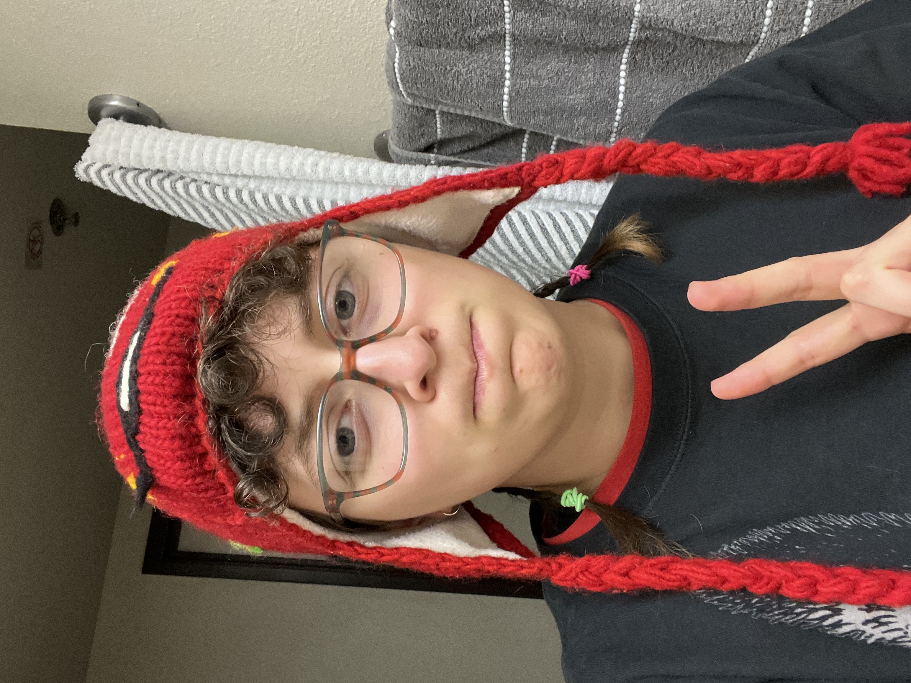

alex's homepage
about the dev:
Alex is the coolest guy you will ever meet. For 18 years, he lived a quiet life in redneck Idaho. This was before the urge to embrace his queerness got too loud and he ran off to California. Once he arrived in Santa Cruz, he dove into his artistic tendencies. He is currently focusing on comics, printmaking, painting, and taking care of his 3 rats (Vomit, Piss, and Snake). Oh also- He loves queer rights, so he tries to do what he can as the President of Kresge Presents PRIDE and the Gender Affirming Coalition. You can follow his instagram at @fart_slayer_ to check out what he is working on.